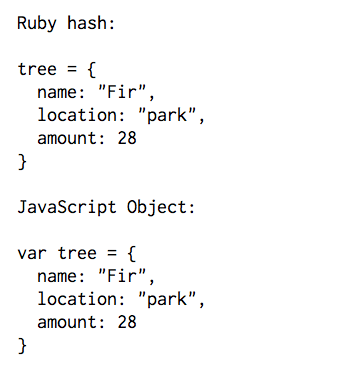
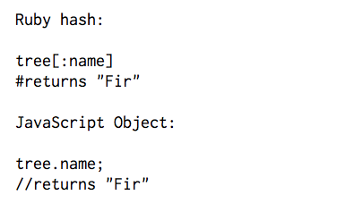

JavaScript
Differences Between Ruby Hashes and JavaScript Objects
Thursday March 24, 2016
If you compare the Javascript and Ruby languages, you will find MANY similarities as well as differences. So learning one right after the other, as you do in Dev Bootcamp, can be helpful but also sometimes confusing. While it's easy to say that somethings in one language are equal to things in another language, you can easily get confused. Wires can easily get crossed and you might find yourself using Ruby syntax in a JavaScript function, scratching you head wondering why it won't work! In this post I will help you distinguish between two similar concpts that are often used with Ruby hashes and JavaScript Objects.
The first difference that should be pointed out is how each is declared. At this stage, the main differences is that in JavaScript, you need to establish the object as a variable first, like so:
There is also a difference in how the values are accessed in each language. Ruby uses brackets with the key name inside while JavaScript uses a dot notation.
If you keep these differences in syntax in mind while first leanring these languages, it will definitely help you out in the long run. I had always found myself needing to remind myself which syntax went with which language, so try to remember early.